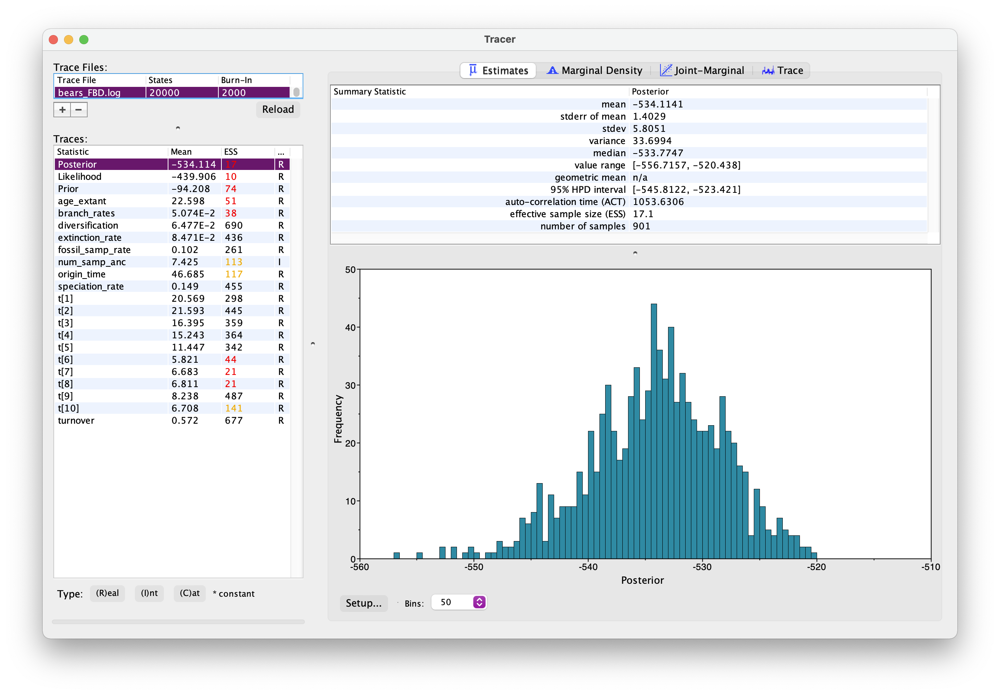
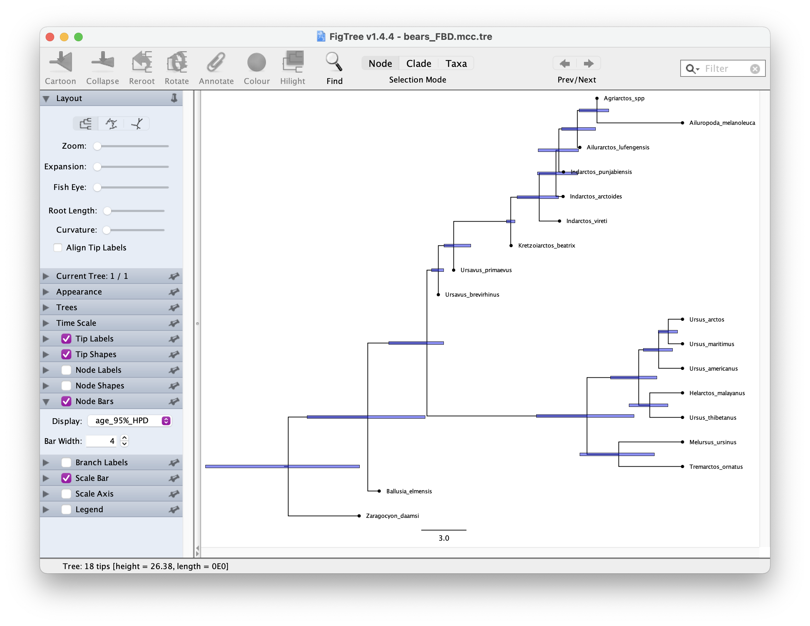

In this exercise we’ll estimate of a time tree of bears under the fossilised birth-death (FBD) process. This time the data we’ll use is a morphological matrix for 16 living and fossil bears. We’ll also use age information associated with all taxa. Download these files and check out the contents.
For this exercise create a folder called exercise 6.
Then create two sub-directories: data and
scripts. Recall that for divergence time estimation we need
three model components, so we’ll create the following scripts:
main.Rev for reading the data, setting up the the tree
model and MCMC settingsFBD_dating.Rev for the time tree model.Mk.Rev for the substitution model.clock_strict_morpho.Rev for the clock model. Edit the
scripts in a text editor of your choice.Start with your main.Rev script. As before, we’ll start
by reading in the data and defining some helper variables.
taxa <- readTaxonData("data/bears_taxa.tsv")
morpho <- readDiscreteCharacterData("data/bears_morphology.nex")num_taxa <- morpho.ntaxa() # number of taxa
num_branches <- 2 * num_taxa - 2 # number of branches in an rooted treeDefine a set of variables for setting up our MCMC.
moves = VectorMoves()
monitors = VectorMonitors()We will use FBD model as our tree model, which describes the distribution of most likely trees, given the model parameters (speciation, extinction, fossil sampling) and fossil ages. Note that because the fossil ages are data, the FBD model is not strictly a prior.
Go to your FBD_dating.Rev script to set this up.
Three of the key parameters of the FBD model are speciation rate (\(\lambda\)), extinction rate (\(\mu\)) and fossil sampling rate (\(\psi\)) We will assume these rates are constant over time and place exponential priors on each of these.
speciation_rate ~ dnExponential(10)
extinction_rate ~ dnExponential(10)
fossil_samp_rate ~ dnExponential(10)Each parameter is a stochastic variable drawn from an exponential distribution with \(\delta\) = 10 and a mean of \(1/\delta\) = 0.1.
Next specify the moves of these parameters.
moves.append( mvScale(speciation_rate, lambda = 0.5, tune = true, weight = 3.0) )
moves.append( mvScale(extinction_rate, lambda = 0.5, tune = true, weight = 3.0) )
moves.append( mvScale(fossil_samp_rate, lambda = 0.5, tune = true, weight = 3.0) )We might also be interested in diversification and turnover, so let’s set up a deterministic variable for each of these.
diversification := speciation_rate - extinction_rate
turnover := extinction_rate/speciation_rateNext we’ll define the probability of extant species sampling (\(\rho\)). Since we sample all extant bears, we’ll specify this probability as a constant variable = 1.0.
rho <- 1.0Now we’ll specify a prior on the origin time parameter. This parameter approximates the age of the clade. We’ll use the oldest bear fossil as a minimum (35.0) and a recent estimate for the age of carnivores as a maximum (55.0).
# prior and move on the origin
origin_time ~ dnUnif(37.0, 55.0)
moves.append( mvSlide(origin_time, weight=1.0) )Finally, we’ll specify the FBD model, along with moves on the tree topology and branch lengths.
tree ~ dnFBDP(lambda = speciation_rate, mu = extinction_rate, psi = fossil_samp_rate, rho = rho, origin = origin_time, taxa = taxa)
# moves to search tree space
moves.append( mvFNPR(tree, weight = 15.0) )
moves.append( mvCollapseExpandFossilBranch(tree, origin_time, weight = 6.0) )
moves.append( mvNodeTimeSlideUniform(tree, weight = 40.0) )
moves.append( mvRootTimeSlideUniform(tree, origin_time, weight = 5.0) )We can create clade constraints to monitor the age of specific clades of interest. Let’s do that for the clade containing living bears.
clade_extant = clade("Ailuropoda_melanoleuca","Tremarctos_ornatus","Melursus_ursinus",
"Ursus_arctos","Ursus_maritimus","Helarctos_malayanus",
"Ursus_americanus","Ursus_thibetanus")
age_extant := tmrca(tree, clade_extant)We might also be interested in know how many sampled ancestors are in our posterior trees, so let’s set up another deterministic variable to monitor this.
num_samp_anc := tree.numSampledAncestors()Since we practically never know the exact age of any fossils, we need to account for age uncertainty. The following loop goes through each fossil in our dataset and assigns a uniform distribution between the minimum and maximum bounds of the known interval of uncertainty.
fossils = tree.getFossils()
for(i in 1:fossils.size())
{
t[i] := tmrca(tree, clade(fossils[i]))
a_i = fossils[i].getMinAge()
b_i = fossils[i].getMaxAge()
F[i] ~ dnUniform(t[i] - b_i, t[i] - a_i)
F[i].clamp( 0 )
}
# moves on fossil ages
moves.append( mvFossilTimeSlideUniform(tree, origin_time, weight = 5.0) )For simplicity we’ll use a strict clock model to describe the rate of character change over time, assuming the rate is constant over time and across all branches in our tree. Hint: you can use your clock script from the previous exercise.
Open your clock_strict_morpho.Rev script. We don’t know
the rate of evolution, so as before we’ll use an exponential prior.
branch_rates ~ dnExponential(10.0)
moves.append( mvScale(branch_rates, lambda = 0.5, tune = true, weight = 3.0) )This rate will be used for all branches.
Next we’ll specify the Mk substitution model in the
Mk.Rev file, which describes the probability of
transitioning from one character state to another. This model is a
generalisation of the Jukes-Cantor model that we’ve encountered
previously.
First we’ll use the fnJC function to define a Q
matrix for 2 states (0, 1) since we only have two character
states in our morphological character matrix. Remember that under this
model rates of change between states and state frequencies are
equal.
Q <- fnJC(2)Then we’ll define a stochastic node representing a character matrix
and “clamp” that variable to our morphological data. Note that this time
we need to use type = "Standard".
seq ~ dnPhyloCTMC(tree = tree, Q = Q, type = "Standard", branchRates = branch_rates)
seq.clamp(morpho)Back in main.Rev add the following lines to include the
tree, clock and substitution models.
# tree model
source("scripts/FBD_dating.Rev")
# clock model
source("scripts/clock_strict_morpho.Rev")
# substitution model
source("scripts/Mk.Rev")The MCMC set up is very similar to before. First we create the
variable mymodel.
mymodel = model(tree)Then we define a set of monitors to capture the output.
# parameters printed to file
monitors.append( mnModel(filename = "output/bears_FBD.log", printgen = 10, exclude = ["F"]) )
# trees printed to file
monitors.append( mnFile(filename = "output/bears_FBD.trees", printgen = 10, tree) )
# parameter values printed to screen during the MCMC
monitors.append( mnScreen(printgen = 10, age_extant, num_samp_anc, origin_time) )exclude = ["F"] here means fossil ages will be excluded
from the log file - I’ve done this because the way RevBayes output this
information is a bit confusing, so we’ll ignore that for the moment.
Finally, we’ll set up the MCMC run using the mcmc
function, specifying our model, the vector of monitors and the vector of
moves and run the chain for 10000 generations.
mymcmc = mcmc(mymodel, monitors, moves)
mymcmc.run(generations = 10000, tuningInterval = 1000)Note that this time we’ve adding the argument
tuningInterval = 1000. This tells the chain how long to
spend optimising the MCMC moves. Different datasets behave differently
\(-\) the above option partly automates
the selection of move parameters that maximise efficiency of the
MCMC.
This might take a while run pretty quickly. Meanwhile, you could move on to the Next tasks.
As before, open your .log file in Tracer.
It should look something like this.

Explore the output. Can you identify the different parameters? Has the analysis converged?
What is the age of the most common recent ancestor of bears?
Next let’s generate a summary tree.
trace = readTreeTrace("output/bears_FBD.trees")
mccTree(trace, file = "output/bears_FBD.mcc.tre", positiveBranchLengths = TRUE)Once you have your summary tree open it in FigTree and play around with the settings. See if you can get something like this.

Which candiates on your tree do you think might be sampled ancestors?
Some extra things to try. Make sure you rename the output files so you don’t overwrite the files you generated above!
Try adding the molecular sequence alignment from the previous exercise.
There’s just a few extra steps we need to add when we read in the
data, at the beginning of main.Rev.
First add the line that reads in the sequence data and create a
constant variable cytb.
taxa <- readTaxonData("data/bears_taxa.tsv")
morpho <- readDiscreteCharacterData("data/bears_morphology.nex")
cytb <- readDiscreteCharacterData("data/bears_cytb.nex")Next we need to make sure the datasets are cross compatible because we don’t have molecular sequence data for all species.
cytb.addMissingTaxa( taxa )
morpho.addMissingTaxa( taxa )That’s it! Now you can go ahead and set up the [GTR]{exercise-05.html#GTR} model as before.
What differences do you notice in your output?
Can you try running the analysis under the prior? Note that its not strictly “under the prior” because the fossil ages are data but RevBayes doesn’t consider the FBD as part of the likelihood, so you can still choose the regular option for running the analysis under the prior to distinguish the signal coming from the FBD/fossil age data vs. the FBD combined with the sequence/morpho data.
Compare you results to the posterior obtained using in the previous steps. What information do we gain from the morphological / molecular data?
A complete set of scripts for this exercise can be downloaded here.